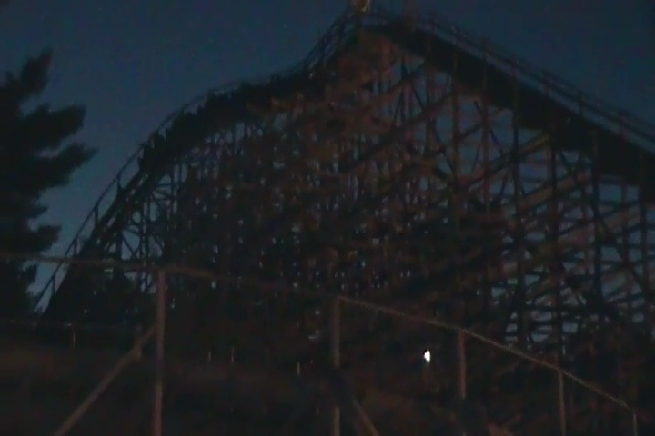
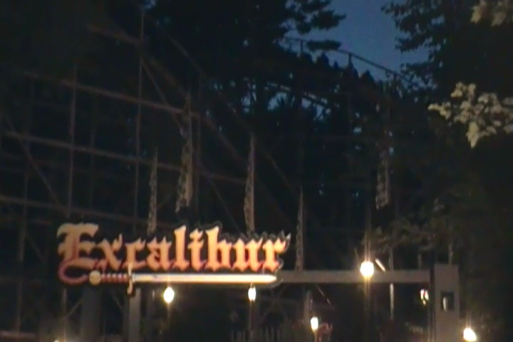
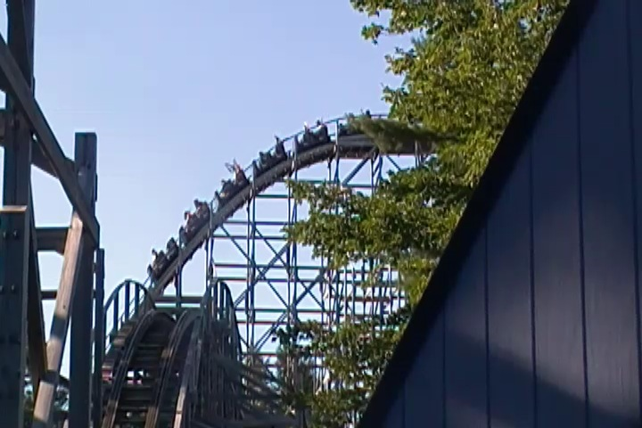
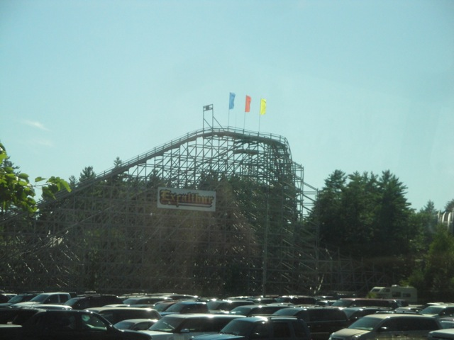
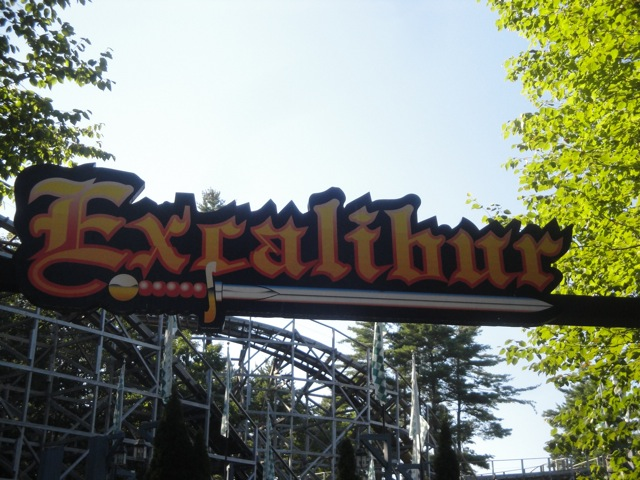

| |
Excalibur Review

We're here at Funtown Splashtown U.S.A. Today we're going to review Excalibur, the park's wooden coaster and certainly the main reason that this park is on the map at all. So let's not waste any more time and hop aboard. Get in the trains, pull down the lap bars, buckle the seatbelts, and we're off!! We roll out of the station through some straight track, down a small dip and begin to climb the lifthill. There's no view to look at climbing up, so let's just fast foreword through the lifthill and get right down to the dirty and good stuff (hey, it's a pretty quick lifthill, so you don't have to wait much in real life either). We go around a turn and head straight down the first drop. In the front, it's fun. You get some nice speed and a chance to raise your hands and have fun. In the back however, you get some serious EJECTOR AIR!!! And when you rise up the next hill, you get some more ejector air!! And after that ejector air, we head staight into a turnaround that provides us with some nice laterals. Seriously, this ride is awesome. We head down another drop, get a little bit more ejector air, though nothing really super strong or anything. We then head through another curved hill. But it really only feels like a big turn that provides us with a lot of laterals. We then make it to a few more small hills. There's some headchoppers, but no airtime. Bummer. We rise up, there's no airtime, but to make matters even worse, we're slowing down and there aren't many laterals. Good god, what's happening over here? We drop down again, and rise up again. We get a mild pop of airtime, but nothing like what we were having early on in the ride. We head around a curve, slowly head down and gain some speed as we head up another hill, around another long dwindling curve, up another hill, around another dwindling curve and into the brake run. And that's Excalibur. A fun, but kind of odd wooden coaster in a small little park in Maine. It's sad because the first part of the ride is so good with some great ejector air and powerful laterals, but it loses a lot of steam as it goes on and by the end, it dwindles into a boring anti-climactic finish. Kind of like a marathoner who starts out SPRINTING and is in the lead, but burning through their energy quickly and finishing the race with a whimper. That's basically Excalibur. I'd still recommend it because hey. It does have some moments of powerful ejector air where I thought I was standing up for a split second and grabbed onto the grab bar in an "OH SH*T!!!" moment. So definetly come up to Funtown Splashtown U.S.A and give Excalibur a ride.
7/10
Location: Funtown Splashtown U.S.A
Opened: 1998
Built by: Custom Coasters
Last Ridden: July 31, 2011
Excalibur Photos





Home
|